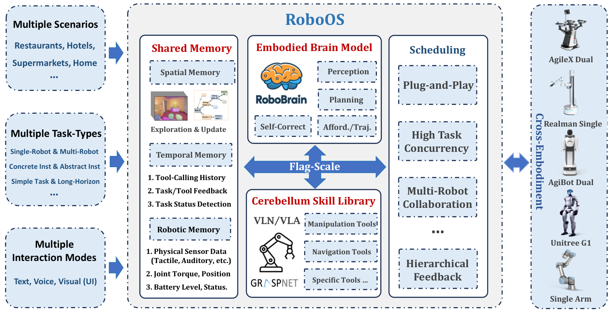

RoboOS
多机器人协作需要共享任务依赖、世界状态和各自能力，不能只把多个 Agent 放在一起。
RoboOS: A Hierarchical Embodied Framework for Cross-Embodiment and Multi-Agent Collaboration
多机器人规划工具调用准确率：RoboBrain-7B-1.5-OS 81.74，DeepSeek-V3 76.21；这不是协作实机成功率。
01这篇要解决什么？
一个机器人能规划，不代表两个机器人就能有效配合。RoboOS 把认知、技能执行和共享记忆拆开，以统一的机器人与工具描述连接异构本体。读这篇要理解任务分配依据和同步过程，而不只记“具身操作系统”这个名字。
02方法怎样运转？

- 01
构造任务依赖图
RoboBrain 根据目标、空间记忆、执行历史与机器人状态，生成带依赖关系的子任务图。
- 02
按能力和依赖分配
Monitor 将已满足前置条件的子任务交给合适机器人；独立任务可并行，有依赖的任务等待上游完成。
- 03
本地执行并更新记忆
各机器人调用自己的技能库；共享记忆记录场景图、时间历史、关节 / 电量等状态，反馈进一步影响调度和恢复。
goal + scene_memory + robot_profiles
↓
dependency_graph
↓ ready nodes
robot-specific skill execution
↓
shared state and feedback方法与结果的原文定位见本页引用。
03跟着一个例子想一遍
教学推演：移动机器人把托盘送到桌边，固定机械臂再摆盘。摆盘必须等待托盘到达，而另一个机器人擦旁边桌子可以并行。如果共享记忆仍把托盘记在厨房，高层计划即使逻辑流畅也会给出错误分工。这个例子突出同步状态的重要性，不代表论文测量了这套具体流程。
04实验到底表现怎样？
表 1 比较具身模型的多机器人规划、指点、可供性和轨迹预测。规划部分在餐厅、家居、超市三类场景各采样生成 200 个任务，以工具调用准确率 AR 评估；实机协作另见 §4.3 的演示。
作者报告的实验结果 · v2
| 表 1 规划模型 | 餐厅 | 家居 | 超市 | 平均 AR |
|---|---|---|---|---|
| Qwen2.5-VL-7B | 43.22 | 59.30 | 58.29 | 53.60 |
| DeepSeek-V3-685B | 69.85 | 83.92 | 74.87 | 76.21 |
| RoboBrain-7B-1.5-OS | 78.39 | 86.93 | 79.90 | 81.74 |
原始证据：架构与调度：§3 ↗ · 能力评估：表 1 / §4 ↗ · 规划基准的 AR 定义：附录 B ↗
81.74 衡量的是规划 / 工具调用层面的表现。论文同时提供跨本体协作演示，但这个表不能证明多台机器人完整完成真实任务的概率是 81.74%。
05收益来自哪里，又停在哪里？
消融与机制证据
本文主要证据是模型能力比较、系统部署和协作展示；这些不能替代“去掉共享记忆”后的同预算端到端对照。把共享记忆视为架构设计的合理机制，与认定它的独立贡献已经量化，是两件不同的事。
结论的适用边界
不同机器人仍需已接入的技能和标准化 Robot Profile。跨本体支持不等于任意新机器人零适配；状态冲突、通信延迟和技能前置条件会影响最终协作。
06放回二十篇的脉络
结合 SayPlan 看空间记忆，结合 PhyAgentOS 看执行生命周期。RoboHarness 则把注意力放在不同策略之间交接时的状态分布。
07把阅读变成一个小研究
用两个仿真 worker 共享物体状态，加入一个“搬运后才能加工”的任务依赖，比较即时更新和延迟更新。
先自己回答：这项实验怎样才有解释力？
统计重复工作、无效调用、依赖违反和总用时，比只记录任务分解文本是否合理更能评价协作。
- 用自己的话说出这篇改变了哪个模块。
- 画出它的输入、输出和一次失败如何被处理。
- 复述一个结果，同时说清基线、指标与实验条件。
多机器人协作需要共享任务依赖、世界状态和各自能力，不能只把多个 Agent 放在一起。
↗带着位置回到原文
首发日期用于时间排序；以下方法与结果对应 v2。数据为论文作者报告，本讲义没有独立复现实验。
QA就这一页提问或讨论
对某个数字、某条边界或某个推演有疑问，欢迎直接留言：讨论按页面分开，回复会保留在 XinrunXu/agentic-robotics-20-papers 的 Discussions 里，需要一个 GitHub 账号。